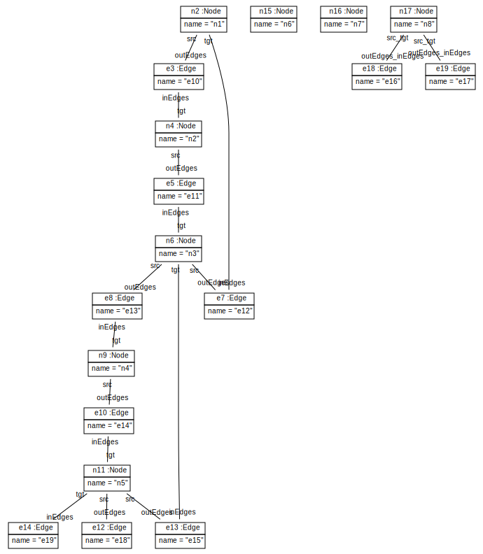
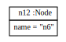
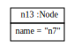
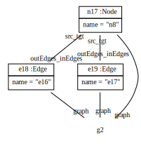

Scenario TTC2011HelloWorldCountNumberOfNodes
Simple Graph application classes:

create example graph:   
int noOfNodes = graph.getNodes().size();
String systemout = "Number of nodes: " + noOfNodes;
systemout: Number of nodes: 8
Count nodes in graph per pattern:
ModelPattern p = new ModelPattern();
GraphPO graphPO = p.hasElementGraphPO(graph);
NodePO nodePO = graphPO.hasNodes();
noOfNodes = p.allMatches();
systemout = "Number of nodes: " + noOfNodes;
systemout: Number of nodes: 8
Retrieve set of matching nodes per pattern and count its elements:
p = new ModelPattern();
graphPO = p.hasElementGraphPO(graph);
nodePO = graphPO.hasNodes();
NodeSet allMatches = nodePO.allMatches();
systemout = "Nodes: " + allMatches.getName().concat(", ") + " Number of nodes: " + allMatches.size();
systemout: Nodes: n1, n2, n3, n4, n5, n6, n7, n8 Number of nodes: 8
p = new ModelPattern();
graphPO = p.hasElementGraphPO(graph);
EdgePO edgesPO = graphPO.hasEdges();
NodePO srcPO = edgesPO.hasSrc();
edgesPO.hasTgt(srcPO);
EdgeSet loopingEdges = edgesPO.allMatches();
systemout = "Looping Edges: " + loopingEdges.getName().concat(", ") + " Number of looping edges: " + loopingEdges.size();
systemout: Looping Edges: e16, e17 Number of looping edges: 2
For comparison a Java solution:
String sysout = "Looping Edges: ";
int noOfLoopingEdges = 0;
for (Edge edge : graph.getEdges())
{
if (edge.getSrc() != null && edge.getSrc() == edge.getTgt())
{
noOfLoopingEdges++;
sysout += edge.getName() + ", ";
}
}
sysout = sysout.substring(0, sysout.length() - 2) + " Number of looping edges: " + noOfLoopingEdges;
sysout: Looping Edges: e16, e17 Number of looping edges: 2
p = new ModelPattern();
graphPO = p.hasElementGraphPO(graph);
nodePO = graphPO.hasNodes();
nodePO.startNAC().hasOutEdges().endNAC();
nodePO.startNAC().hasInEdges().endNAC();
NodeSet isolatedNodes = nodePO.allMatches();
systemout = "Isolated nodes: " + isolatedNodes.getName().concat(", ") + " Number of isolated nodes: " + isolatedNodes.size();
systemout: Isolated nodes: n6, n7 Number of isolated nodes: 2
For comparison a Java solution:
sysout = "Isolated nodes: ";
int noOfIsolatedNodes = 0;
for (Node isoNode : graph.getNodes())
{
if (isoNode.getOutEdges().size() == 0
&& isoNode.getInEdges().size() == 0)
{
noOfIsolatedNodes++;
sysout += isoNode.getName() + ", ";
}
}
sysout = sysout.substring(0, sysout.length() - 2) + " Number of isolated nodes: " + noOfIsolatedNodes;
sysout: Isolated nodes: n6, n7 Number of isolated nodes: 2
p = new ModelPattern();
graphPO = p.hasElementGraphPO(graph);
NodePO firstCircleNodePO = graphPO.hasNodes();
NodePO secondCircleNodePO = firstCircleNodePO.hasOutEdges().hasTgt();
NodePO thirdCircleNodePO = secondCircleNodePO.hasOutEdges().hasTgt();
thirdCircleNodePO.hasOutEdges().hasTgt(firstCircleNodePO);
p.matchIsomorphic();
int noOfCircles = p.allMatches();
systemout = "Circles found: " + noOfCircles;
systemout: Circles found: 6
If you want to print the matched nodes for each circle, you need to iterate through the matches:
p = new ModelPattern();
graphPO = p.hasElementGraphPO(graph);
firstCircleNodePO = graphPO.hasNodes();
secondCircleNodePO = firstCircleNodePO.hasOutEdges().hasTgt();
thirdCircleNodePO = secondCircleNodePO.hasOutEdges().hasTgt();
thirdCircleNodePO.hasOutEdges().hasTgt(firstCircleNodePO);
p.matchIsomorphic();
systemout = "Circles found: n";
noOfCircles = 0;
while (p.getHasMatch())
{
systemout += firstCircleNodePO.getName() + " --> "
+ secondCircleNodePO.getName() + " --> "
+ thirdCircleNodePO.getName() + " --> n";
noOfCircles++;
p.findNextMatch();
}
systemout += "" + noOfCircles + " circles found";
systemout: Circles found: n1 --> n2 --> n3 --> n2 --> n3 --> n1 --> n3 --> n1 --> n2 --> n3 --> n4 --> n5 --> n4 --> n5 --> n3 --> n5 --> n3 --> n4 --> 6 circles found
Just for comparison, a plain java implementation:
noOfCircles = 0;
sysout = "Circles found: n";
for (Node firstNode : graph.getNodes())
{
for (Edge firstEdge : firstNode.getOutEdges())
{
Node secondNode = firstEdge.getTgt();
if (secondNode != null && secondNode != firstNode)
{
for (Edge secondEdge : secondNode.getOutEdges())
{
Node thirdNode = secondEdge.getTgt();
if (thirdNode != null && thirdNode != secondNode && thirdNode != firstNode)
{
for (Edge thirdEdge : thirdNode.getOutEdges())
{
if (thirdEdge.getTgt() == firstNode)
{
// found match
sysout += firstNode.getName() + " --> "
+ secondNode.getName() + " --> "
+ thirdNode.getName() + " --> n";
noOfCircles++;
}
}
}
}
}
}
}
sysout += "" + noOfCircles + " circles found";
sysout: Circles found: n1 --> n2 --> n3 --> n2 --> n3 --> n1 --> n3 --> n1 --> n2 --> n3 --> n4 --> n5 --> n4 --> n5 --> n3 --> n5 --> n3 --> n4 --> 6 circles found